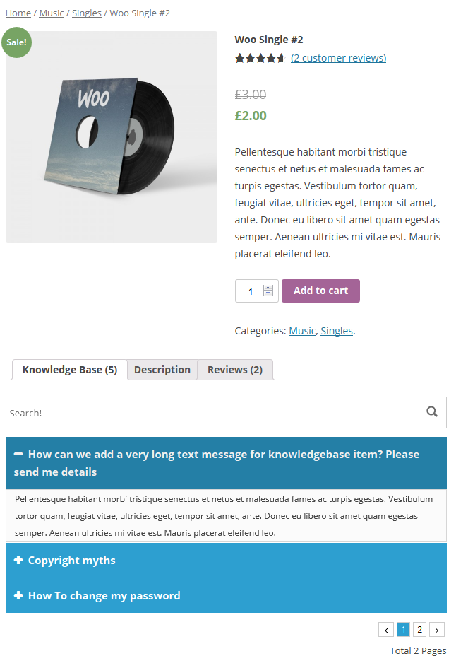
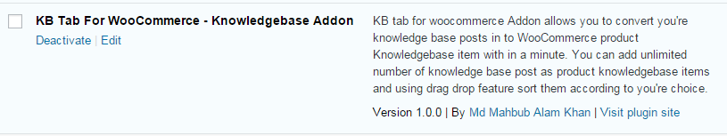
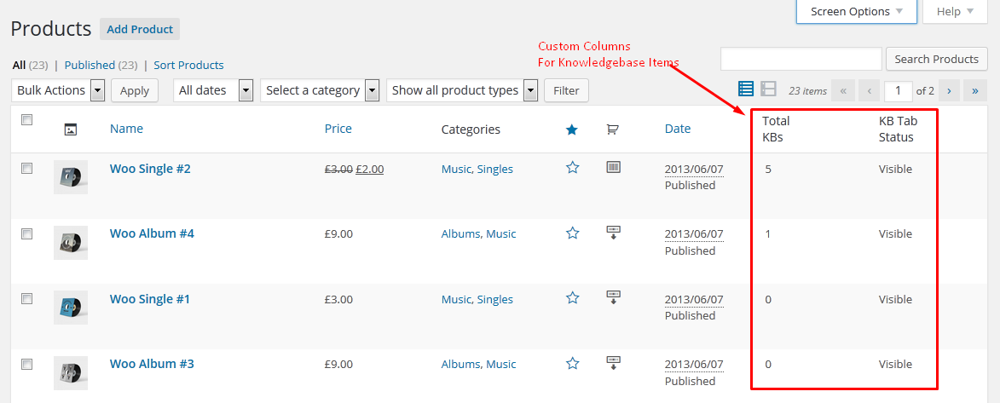
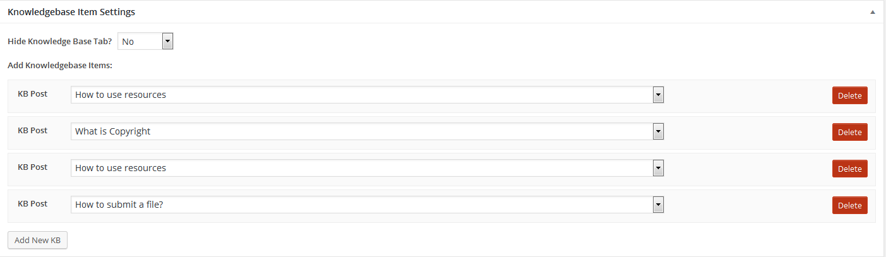
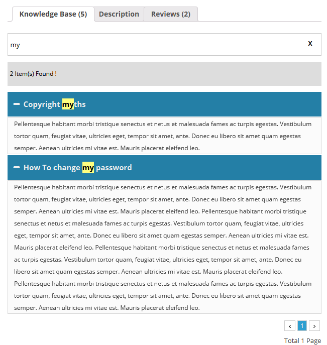
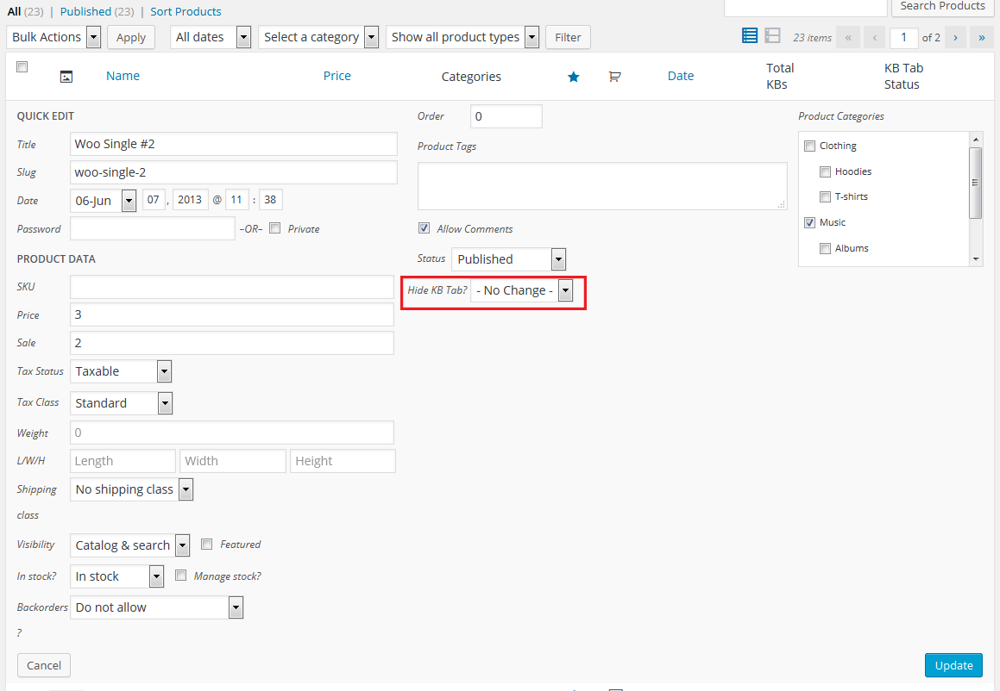
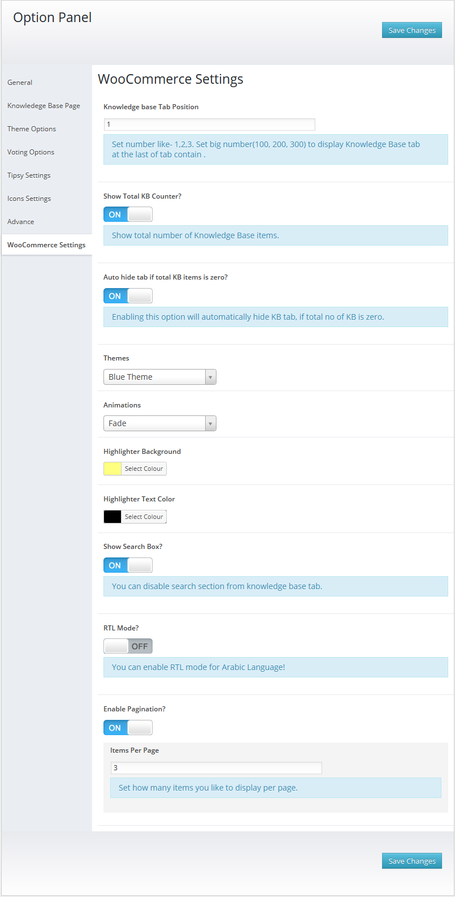

KB Tab For WooCommerce - Knowledge Base Addon - 1.0.7
Documentation by
Md Mahbub Alam Khan
Created: 04/05/2015
Last Edited: 12/05/2017
By: Md Mahbub Alam Khan
Support: Get Premium Support
Web Site: www.bluewindlab.net
Thank you for purchasing KB Tab For WooCommerce - Knowledgebase Addon. If you like this plugin, feel free to rate it five stars at CodeCanyon downloads section. If you encounter any problems please do not give a low rating but contact me first. So I can help you. Thank You!
Table of Contents
- Quick Introduction
- Installation
- How To Use?
- Option Panel
- Translate Addon
- Upgrade Notes
- Change Log
- Credits
- Conclusion
A. Quick Introduction? - top
KB tab for woocommerce Addon allows you to convert you're knowledge base posts in to WooCommerce product Knowledgebase item with in a minute. You can add unlimited number of knowledge base post as product knowledgebase items and using drag drop feature sort them according to you're choice.
Addon comes with Premium & Unique BWL Searchable Accordion jQuery Plugin. So that you're user can easily find their required contents from long Knowledgebase lists.
Also pagination feature gives the flexibility to present large no of KB items very easily.
In admin panel, Addon automatically integrate two custom columns(No of Kbs and KB Tab Display Status) with each WooCommerce product. This options gives you a quick
overview about product knowledge base status. you can easily show/hide KB tab using Quick and Bulk Edit option. You can also doing this while add/edit product
information.
Addon also brings extensive option panel that allows you to configure KB tabs according to you're need. You can set KB tab order, set RTL mode, set Pagination, Set theme, set animation and many more.
Checkout plugin outlook in WordPress site-

B. Installation: - top
You need to install BWL Knowledge Base Manager Plugin to use "KB Tab For WooCommerce Addon". Minimum version 1.0.9 required.
- Steps:
- Go to plugins section in your wordpress admin panel and click Add New to install plugin.

- Now, upload the "kb-tab-for-woocommerce.zip" file.
- Once plugin successfully uploaded in your server you will get an message to activate it. Click on "Activate Plugin" Link and plugin will be ready to use.
- After activating plugins, you will redirect in plugins section of wp-admin panel and
show new installed plugins information in there.

C. How To Use? - top
- Once installation has been completed successfully, go to Products page from admin menu.
You will see two custom columns(No of Kbs & KB Tab Display Status)
with each WooCommerce product row.

- Now, click on any product 'Edit' link and you will see Knowledge Base Item Settings section
just below the product description editor box. Click Add New button will allow you to add new knowledge base
item. You can also show/hide knowledge base tab from this section. Check following image-

- Once you added all the items successfully, click Update button to save all the change and
you will see the output in front-end section. From the following image you can see the highlighted results of filtered
items.
-

- Using Quick Edit & Bulk Edit feature you can easily change the status
of Knowledge base tab display settings.

- Addon has extensive option panel that allows you to configure KB tabs according to you're need.
You can set KB tab order, set RTL mode, set Pagination, Set theme, set animation and many more..

E. Translate Plugin. - top
"KB Tab For WooCommerce" offers cool translation feature. So, you can easily add this plugin any kind of website. Check following steps for translate "KB Tab For WooCommerce" plugin.
- Inside of Addon "lang" folder you will get a file named "en_EN.po" file. To edit this file you need to install "poedit" software in your computer.
- Our Addon text-domain is 'bkb-kbtfw'
- If you are doing "localization of a plugin" for the first time, then I recommend you to check this video. http://www.youtube.com/watch?v=aGN-hbMCPMg
- Suppose you want to translate plugin in to "German" language.
So,".po" file name will be "bkb-kbtfw-de_DE.po". That's all. - For country code check - http://www.gnu.org/savannah-checkouts/gnu/gettext/manual/html_node/Country-Codes.html#Country-Codes
- For Language code check - http://www.gnu.org/savannah-checkouts/gnu/gettext/manual/html_node/Usual-Language-Codes.html#Usual-Language-Codes
F. Upgrade Notes - top
Please take a backup before update all files and folder.
2017, May, 12 - v 1.0.7
- Replace all files and folders.
2016, December, 20 - v 1.0.6
- Replace all files and folders.
2016, June, 07 - v 1.0.5
- Replace all files and folders.
2016, May, 01 - v 1.0.4
- Replace all files and folders.
2015, November, 20 - v 1.0.3
- Replace all files and folders.
2015, November, 06 - v 1.0.2
- Replace all files and folders.
2015, August, 12 - v 1.0.1
- Replace all files and folders.
2015, May, 04 - v 1.0.0
- Initial release.
G. Change Log - top
2017, May, 12 - v 1.0.7
- Fixed WooCommerce 3.0.6 notice and checked compatibility with latest version.
- Update language files..
- Improved Documentation.
2016, December, 20 - v 1.0.6
- Fixed add new KB button issue.
- Fixed remove all KB items issue.
- Fixed total KB count issue in product column.
- Improved Addon Performance.
- Improved Documentation.
2016, June, 07 - v 1.0.5
- Fix multi-site notification issue.
- Improved Addon Performance.
- Improved Documentation.
2016, May, 01 - v 1.0.4
- Fixed KB content formatting issue.
- Fixed search result issue.
- Improved addon meta box.
- Improved Addon Performance.
- Improved Documentation.
2015, November, 20 - v 1.0.3
- Improved Addon Performance.
- Improved Documentation.
2015, November, 06 - v 1.0.2
- Fixed Pagination Issue.
- Update Documentation.
2015, August, 12 - v 1.0.1
- Fixed Knowledgebase Tab Title For WooCommerce
- Update Documentation.
2015, May, 04 - v 1.0.0
- Initial release.
H. Credits - top
- Ideas & Coded By Md Mahbub Alam Khan
- BWL Knowledge Base Manager Plugin Plugin By xenioushk
- BWL Searchable Accordion Plugin By xenioushk
I Conclusion: - top
Once again, thank you so much for purchasing KB Tab For WooCommerce - Knowledge Base Addon.
Md. Mahbub Alam Khan